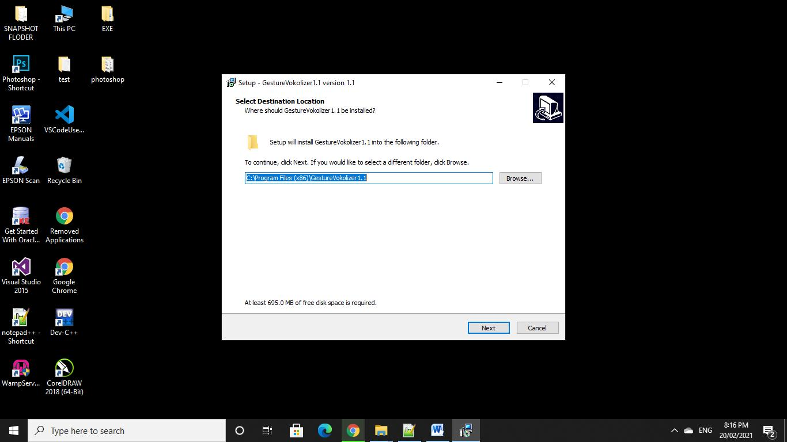
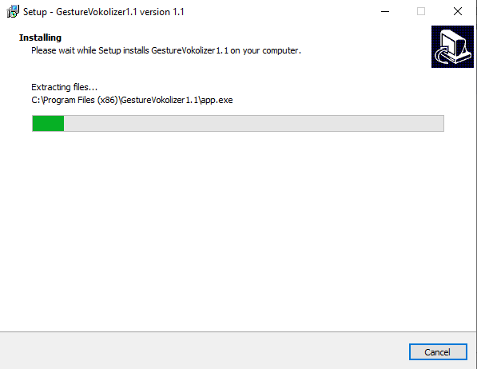

Feature
Easy to use
Easy to use
Data extraction from Live video
Compatible with all type of devices
Download Gesture Vocalizer by clicking on the button. After downloading follow given steps:
First go on to download folder of your computer and click on the .exe file. Double click on the gesture vocalizer.exe file to install.
A message will pop-up on your computer screen "Do you want to allow this application from an unknown publisher to make changes to your device" -> "CLICK ON NEXT". The gesture vocalizer.exe file will show a default path where the application is going to be installed in your computer. To continue -> "CLICK ON NEXT" (if you want to set path according to your choice it will allow you to set.)
.png)
Now it will ask you an additional task "our web application allows to create a desktop shortcut" which is already tick mark on the desktop shortcut now "CLICK ON NEXT" to continue. It will display that your setup is now ready to be install with the specific path that you have choosed/set default. -> "CLICK ON TO INSTALL".
.png)
It will take few minutes for the installation of the gesture vocalizer.exe file. Now the setup has finished the installation process. Click on to the finish button to complete the task.
After the completion of application you will immediately see a black screen on your computer screen.It will take few minutes to launch the application. After few minutes of the process the main screen of gesture vocalizer will be displayed on your screen where you wll see a live camera, words, sentence formation , audio etc. (Now your application is ready to use).
.png)